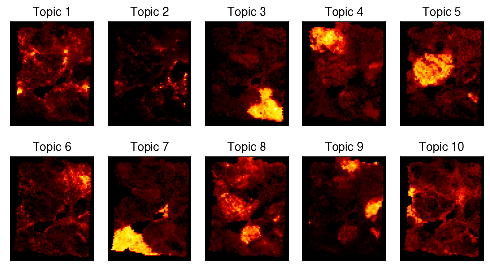
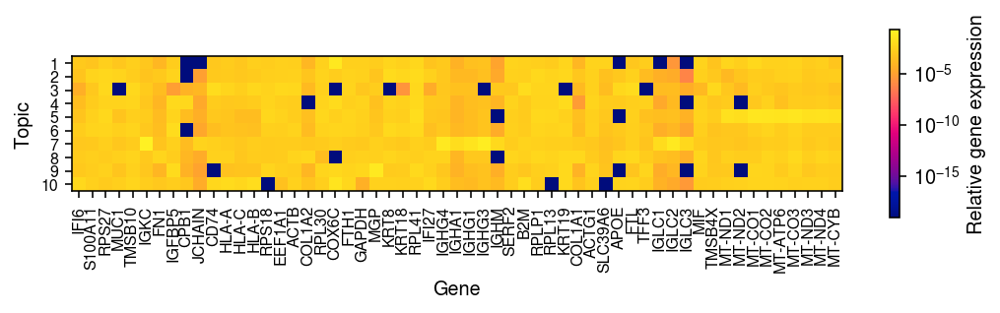

GOM model for spatial transcriptomic data
Table of Contents
Introduction
Lee and Seung 1999 described how (Poisson) non-negative matrix factorization (NMF) can be used to learn “parts” of faces/semantic concepts that combine additively to generate observed images/text. Here, we investigate the use of NMF to learn spatial structures from spatial transcriptomic data (Ståhl et al. 2016, Vikovic et al. 2019, Rodriques et al. 2019).
Setup
import anndata import numpy as np import pandas as pd import pickle import scanpy as sc import scipy.sparse as ss import scipy.stats as st import scmodes import sklearn.datasets as skd
import rpy2.robjects.packages import rpy2.robjects.pandas2ri rpy2.robjects.pandas2ri.activate() matrix = rpy2.robjects.packages.importr('Matrix') fasttopics = rpy2.robjects.packages.importr('fastTopics')
%matplotlib inline %config InlineBackend.figure_formats = set(['retina'])
import colorcet import matplotlib import matplotlib.pyplot as plt plt.rcParams['figure.facecolor'] = 'w' plt.rcParams['font.family'] = 'Nimbus Sans'
Results
Visium
Read the pre-processed data. Filter out genes with no observed data.
dat = anndata.read_h5ad('/project2/mstephens/aksarkar/projects/singlecell-ideas/data/spatial/V1_Breast_Cancer_Block_A_Section_1/dat.h5ad') sc.pp.filter_genes(dat, min_cells=1) dat
AnnData object with n_obs × n_vars = 3798 × 24923 obs: 'barcode', 'in_tissue', 'row', 'col', 'pxl_row', 'pxl_col' var: 'gene', 'name', 'featuretype', 'n_cells'
Fit a topic model, ignoring spatial information.
temp = dat.X.tocoo() y = matrix.sparseMatrix(i=pd.Series(temp.row + 1), j=pd.Series(temp.col + 1), x=pd.Series(temp.data), dims=pd.Series(temp.shape)) res = fasttopics.fit_poisson_nmf(y, k=10, numiter=100, method='scd', control=rpy2.robjects.ListVector({'extrapolate': True}), verbose=True) res = fasttopics.poisson2multinom(res)
Write out the fitted model.
with open('/scratch/midway2/aksarkar/singlecell/visium-k-10-topic-model.pkl', 'wb') as f: pickle.dump(res, f)
Look at the loadings on each topic, spatially organized.
plt.clf() fig, ax = plt.subplots(2, 6, sharex=True, sharey=True) fig.set_size_inches(7, 3) for k, a in enumerate(ax[:,:5].ravel()): temp = ss.coo_matrix((res.rx2('L')[:,k], (dat.obs['row'], dat.obs['col'] // 2)), shape=(80, 64)) a.imshow(temp.A, cmap=colorcet.cm['fire']) a.set_title(f'Topic {k + 1}') a.set_xticks([]) a.set_yticks([]) for a in ax[:,5]: a.axis('off') cb = fig.colorbar(matplotlib.cm.ScalarMappable(norm=matplotlib.colors.Normalize(vmin=0, vmax=1), cmap=colorcet.cm['fire']), ax=ax[:,5].ravel(), anchor=(0, 0.5), shrink=0.75) cb.set_label('Loading') fig.tight_layout()

Look at the top (highest probability) genes in each topic.
freq_genes = pd.DataFrame({k: dat.var.iloc[np.argsort(-res.rx2('F')[:,k])[:10]]['name'].values for k in range(10)}) freq_genes
0 1 2 3 4 5 6 7 8 \ 0 COX6C RPL41 CD74 COX6C MT-CO1 IGFBP5 IGKC MT-CO3 MGP 1 MT-CO1 KRT8 FTL KRT19 MT-CO3 KRT8 IGHG3 FTL IGFBP5 2 RPL41 RPLP1 B2M RPL41 MT-CO2 RPL41 IGHG4 COL1A1 RPL41 3 KRT8 RPS27 TMSB10 IGFBP5 MT-ATP6 COX6C IGLC2 KRT19 KRT19 4 KRT19 KRT18 RPL41 CPB1 MT-ND4 RPS27 IGHG1 COL1A2 COX6C 5 MT-ND1 KRT19 APOE TMSB10 MT-ND3 KRT18 IGHA1 RPLP1 GAPDH 6 SERF2 S100A11 TMSB4X ACTG1 MT-ND1 RPLP1 IGLC1 KRT8 RPL30 7 SLC39A6 RPL13 RPS27 RPL13 MT-CYB KRT19 IGHM MIF TFF3 8 MT-CO3 MUC1 EEF1A1 RPLP1 MT-ND2 FTH1 IGLC3 SERF2 MT-CO1 9 ACTG1 FTH1 ACTB KRT8 RPL41 S100A11 JCHAIN FN1 RPS18 9 0 COX6C 1 B2M 2 HLA-B 3 HLA-A 4 IFI27 5 KRT19 6 IFI6 7 CD74 8 FTH1 9 HLA-C
Look at distinctive genes in each topic, i.e., genes with maximum minimum KL divergence from all other topics.
def top_genes_idx(F, k, num_genes=10): fk = F[:,k].reshape(-1, 1) temp = fk * (np.log(fk) - np.log(F)) - fk + F return np.argsort(-temp[:,np.arange(temp.shape[1]) != k].min(axis=1))[:num_genes] top_genes = pd.DataFrame({k: dat.var.iloc[top_genes_idx(np.array(res.rx2('F')), k)]['name'].values for k in range(10)}) top_genes
0 1 2 3 4 5 6 7 \ 0 COX6C CXCL14 TMSB4X CPB1 MT-CO1 CRISP3 IGKC COL1A1 1 SLC39A6 CCND1 KRT19 COX6C MT-CO2 SLITRK6 IGHG3 COL1A2 2 MT-ND1 AGR2 CD74 FCGR3B MT-CO3 C6orf141 IGLC2 SPARC 3 MT-CO1 TTLL12 IGFBP5 CFB MT-ATP6 SERHL2 IGHG4 FN1 4 RPS15 GFRA1 HLA-B TNFSF10 MT-ND3 H3F3A IGHG1 COL3A1 5 DDR1 DEGS1 HLA-DRA TFF3 MT-ND4 IGFBP5 IGHA1 LGALS1 6 SCD MT-ND1 KRT8 KRT19 MT-CYB CD74 IGLC3 MT-CO3 7 RPL17 TCEAL4 LYZ COLEC12 MT-ND1 VTCN1 IGLC1 POSTN 8 SNCG ARMT1 KRT18 SLC39A6 MT-ND2 NUPR1 IGHG2 COL6A2 9 RPL13 GNG5 HLA-DPB1 REPS2 MT-ND5 S100A13 IGHM TAGLN 8 9 0 MGP HLA-B 1 ALB IFI6 2 S100G COX6C 3 SERPINA3 IFI27 4 ZNF350-AS1 HLA-C 5 GAPDH HLA-A 6 TFF3 ISG15 7 S100A6 RPL13 8 STC2 CD74 9 CD74 RPS18
temp = res.rx2('F')[dat.var['name'].isin(set(freq_genes.values.ravel()))]
plt.clf() plt.gcf().set_size_inches(7.5, 3) im = plt.imshow(temp.T, cmap=colorcet.cm['bmy'], norm=matplotlib.colors.LogNorm(vmin=temp.min(), vmax=temp.max())) plt.xlabel('Gene') plt.ylabel('Topic') plt.xticks(np.arange(temp.shape[0]), dat.var.loc[dat.var['name'].isin(set(freq_genes.values.ravel())), 'name'].values, size=8, rotation=90) plt.yticks(np.arange(temp.shape[1]), 1 + np.arange(temp.shape[1]), size=8) cb = plt.colorbar(im, shrink=0.5) cb.set_label('Relative gene expression') plt.tight_layout()
